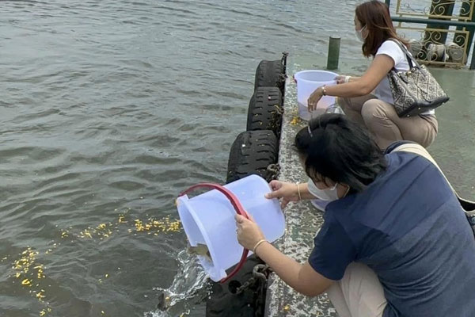

ฝากปล่อยปลาออนไลน์
ไม่มีเวลา อยู่ต่างจังหวัด หรือเดินทางไม่สะดวก — แจ้งแค่ชื่อกับจำนวนปลา ที่เหลือเราจัดการให้ทั้งหมด ไม่คิดค่าบริการ
- สวดอธิษฐานจิตขานชื่อ-นามสกุลของคุณ
- ส่งคลิปวิดีโอขณะปล่อยกลับให้ชม
- อุทิศส่วนกุศลให้ผู้ล่วงลับหรือเจ้ากรรมนายเวรได้